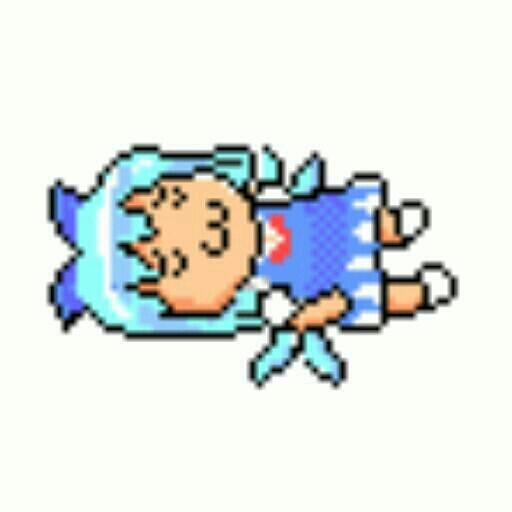
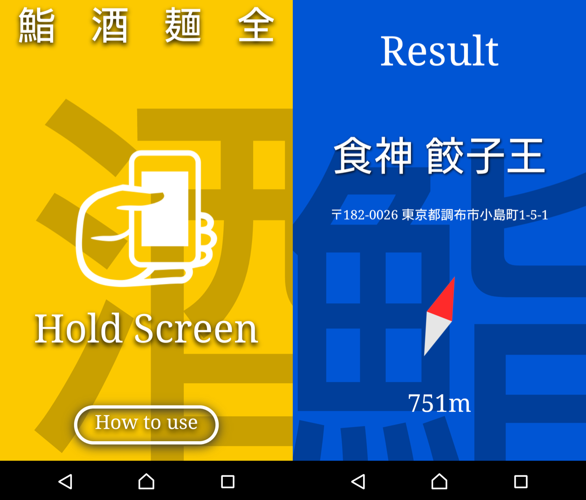
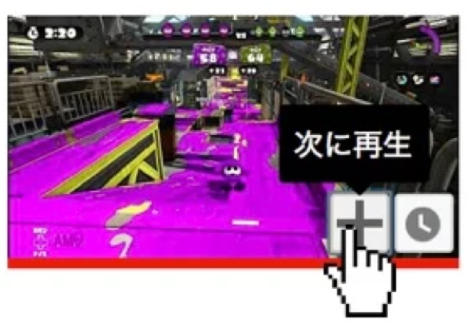
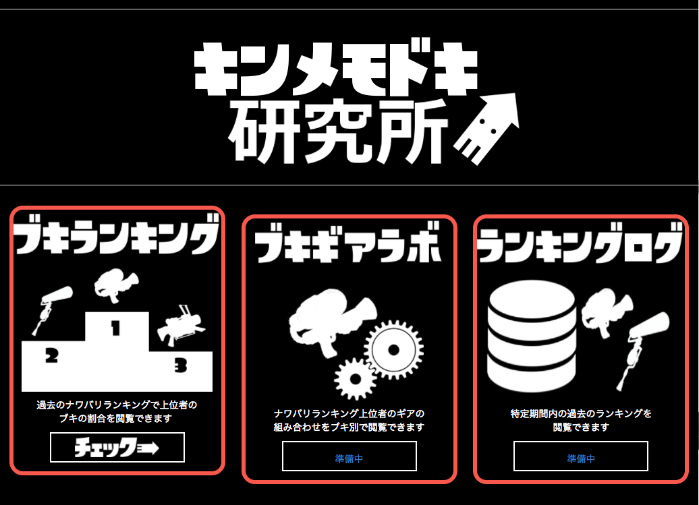
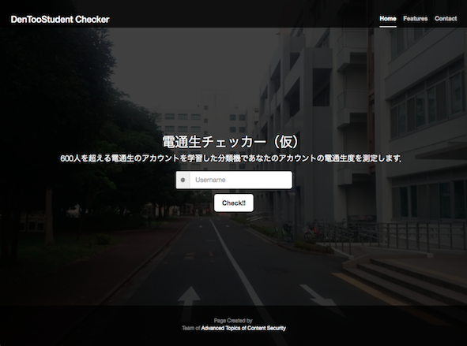
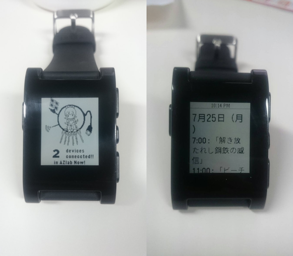
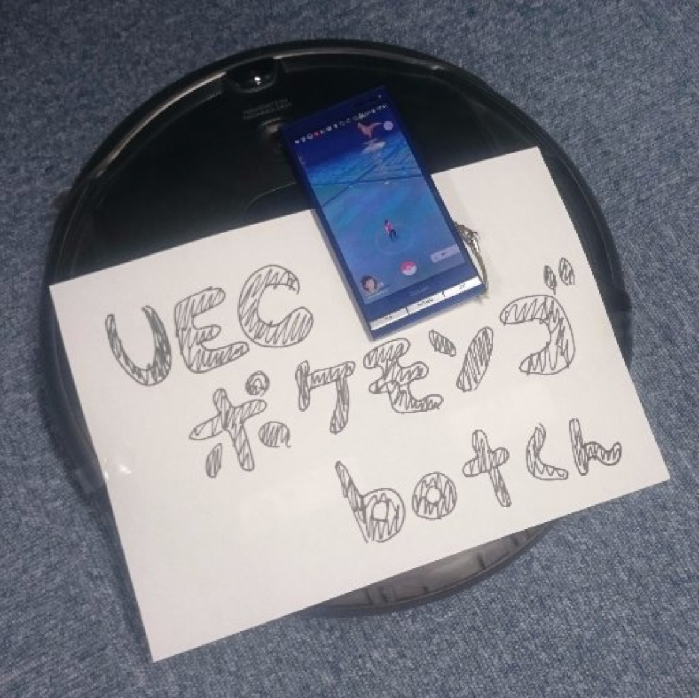

Biography
ハッカソンとかCTFとかでてます
Accounts
Twitter
Github
SlideShare
Hatena
Products

GO飯(GO-Han)
HackU 東京会場でチームInsilico内で作ったもの．自分はサーバ担当した．
イヤホンモジュールに寿司，拉麺，酒のフィギュアを刺した状態で端末を振ると， 端末を指した方向でそのフィギュアのジャンルの飯屋が見つかる．
WoSign関連でSSLが上手くいってないのでいつか直します(直った)
Web版(モジュールなし/スマホのみ)
作った(未完成)．

YoutubePlayNexter
Youtubeで(iTunesにある)「次に再生」機能を付与するChrome拡張機能．今のところ1曲しかスタックできません．
YouTube PlayNexter

キンメモドキ研究所
任天堂の人気ゲームSplatoonのランキングを集計するサイト． 集計結果から人気ブキの傾向を公開したりした．

電通生判定webサイト
講義で同じグループのつよい人たちが判定機を作ってくれた(自分はデータ収集だけしてた)． せっかくなので完成した判定機をWebサービスにしたいなぁと思ったので作った． 判定データをさらに学習データとする設計だった．

Pebbleアプリ
（左）研究室にある無線LANのARPテーブルから，研究室の在室人数を確認するやつ． ボスがweb版を作っていたのでpebble版を作った．
（右）PSO2のサイトをスクレイピングしてイベント情報を表示するやつ． イベント情報はjsonにして配信してた．

例のアレ
大学周辺で出現したのポケモンをツイートするTwitterBotだった。
アレ(Twitterリンク)
の稼働は停止しました．
こういうのすき